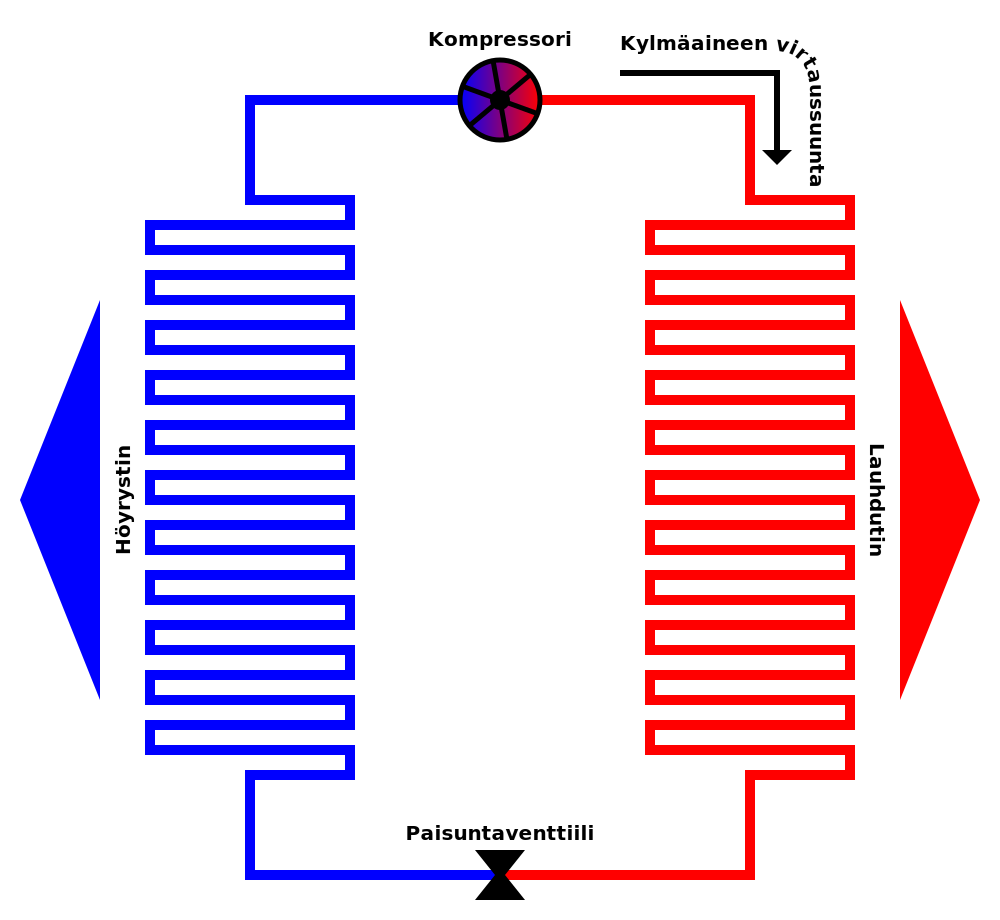

Ilmari Marttila ja Niko Kangasniemi
Lämpöpumpun toimintaperiaate
Eri moottorityyppejä käytetään kompressorin pyörittämiseen
| Suoraan verkkojännitteeseen kytketty oikosulkumoottori | Tehopiikki käynnistyessä |
| Oikosulkumoottori pehmokäynistimellä | Ei niin suurta tehopiikkiä |
| Oikosulkumoottori taajuusmuuttajakäyttöllä | kompressorin nopeutta ja täten sen ottamaa tehoa kyetään säätämään. Ei tehopiiikejä |
Myös muun tyyppiset voimanlähteet ovat mahdollisia
SunSpec on SunSpec Alliancen määrittelemä standardi aurinkoinverttereille ja energiavarastoille.
Tää dia taitaa olla Nikon hommia 🤔